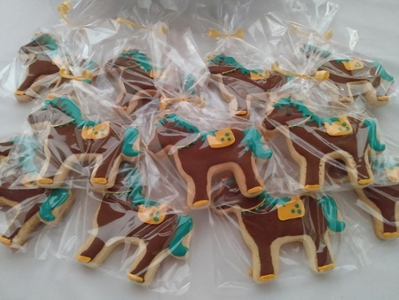
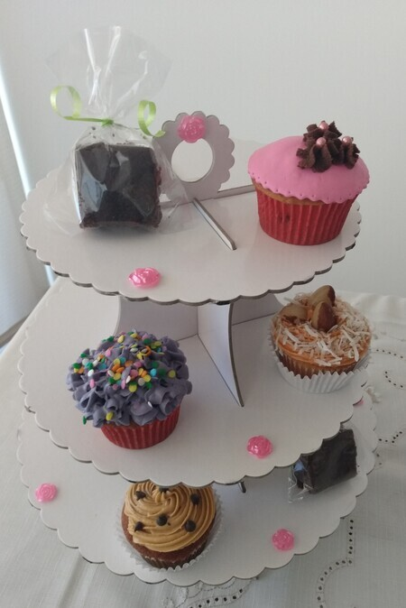

Panadería Artesanal
Dentro de nuestros productos puedes encontrar mogollas de arándanos con chocolate amargo para acompañar una tarde de onces, y pan focaccia ideal para servir con pastas o elaborar sandwichs.
Clases Personalizadas
Si deseas aprender alguna receta en particular y requieres orientación, contamos con clases personalizdas que incluyen kit completo de ingredientes y guia escrita de la receta.
Masas listas
¿Pensando en pasar una tarde diferente en familia o con amigos? Tenemos disponible masa de pizza y masa de galletas (naranja, vainilla-chocolate). Requieren refrigeración antes de usar.
Galletas

Nuestras galletas de naranja o coco decoradas con glass real, son una excelente opción para complementar tus reuniones sociales. Diseños a elección del cliente. Pedido mpinimo 6 unidades.
Cup cakes

Para tus eventos o cualquier ocasión especial puedes disfrutar de nuestros cup cakes con decoración en crema o fondant. Sabores disponibles:naranja, vainilla, chocolate, tiramisú, limón, manzana verde, coco. Pedido mínimo 6 unidades.
Tortas

Acompañamos tu celebración con deliciosas tortas artesanales elaboradas a tu gusto. Disponible en presentación de 8, 12, 20, 30 y 40 porciones. Sabores disponibles: naranja con amapola, vainilla, chocolate, ciruelas, coco, limón, selva negra, red velvet, capuchino, moka, marmolada.